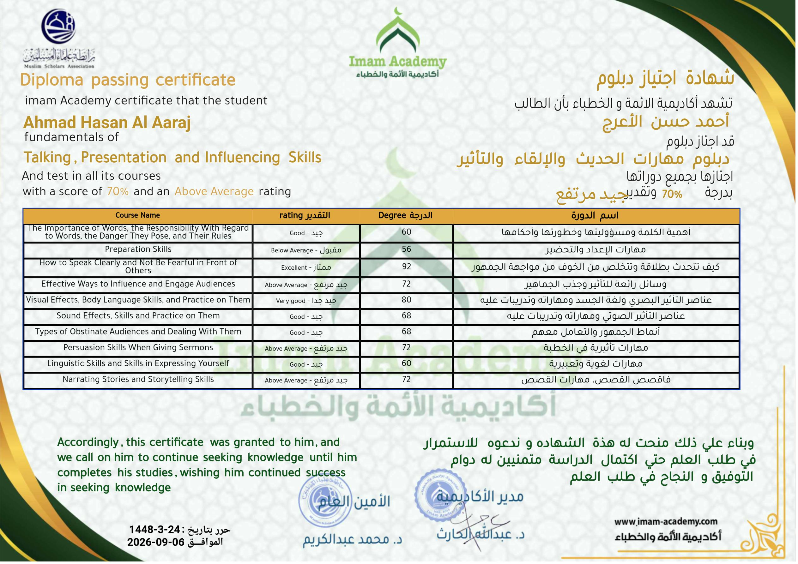

دورة متخصصة · 15 أكتوبر 2026
صحافة الإنترنت
شهادة اجتياز دورة صحافة الإنترنت — معهد الجزيرة للإعلام.
كاتب وإعلامي فلسطيني
محطات من المسار التعليمي والتدريب المهني والإعلامي.
شهادة اجتياز دورة صحافة الإنترنت — معهد الجزيرة للإعلام.

شهادة تدريبية من أكاديمية الأئمة والخطباء.

دبلوم مهني من معهد سبلين، بمعدل 86.